A Dual-adaptive Structured Light Geometric Measuring Method for Metal Surfaces Considering Different Reflectance
Advanced Mechanism and Roboticized Equipment Lab, Tsinghua University, China
Member(s) : Yingying Li
Supervisor(s) : Dr. Zenghui Xie, Dr. Fugui Xie, Dr. Xin-Jun Liu
Large scale complex components often require in-situ geometric measurement after robotic machining to evaluate distances and angles between surfaces.
These applications require a compact and accurate measurement system that can be integrated with robotic platforms.
Structured light (SL) is suitable because it measures 3D point clouds of a whole surface without mechanical scanning or
requiring surface features. Its accuracy is nevertheless affected by low fringe amplitude at conventional chessboard
corners during projector calibration. It is also affected by overexposure and underexposure caused by varying reflectance
on metal surfaces. This study proposes local homography based calibration feature points located inside white chessboard
cells. It also proposes a dual adaptive method that adjusts projector intensity and calculates additional camera exposure
times. Experiments showed average reductions of 95.68% in projector reprojection error.
Tests on three emulated machining scenarios produced cleaner point clouds and improved distance and angle measurement
accuracy by approximately 47%~61% compared with a commercial structured light camera. The average errors produced
by the proposed method were 0.036 mm for surface to surface distance measurement and 0.044 degs for angle measurement.
A structured light system uses a projector and a camera to measure the 3D coordinate of an object.
The projector illuminates the surface with sinusoidal fringe patterns, and the camera records their
appearance from a different viewpoint. As the patterns are shifted through a sequence of known phases,
the intensity changes at each camera pixel are used to calculate the corresponding projector pixel by decoding the fringe phase.
Low-frequency patterns help identify the fringe order, while high-frequency patterns provide finer phase information.
Vertical and horizontal fringes determine the corresponding horizontal and vertical coordinates in the projector image plane.
Once a camera pixel is matched to a projector pixel, the corresponding rays from the camera and projector are determined using their calibrated parameters.
The 3D surface point is then calculated by triangulating these two rays. Repeating this process for all matched pixels produces 3D point clouds for the whole surface.
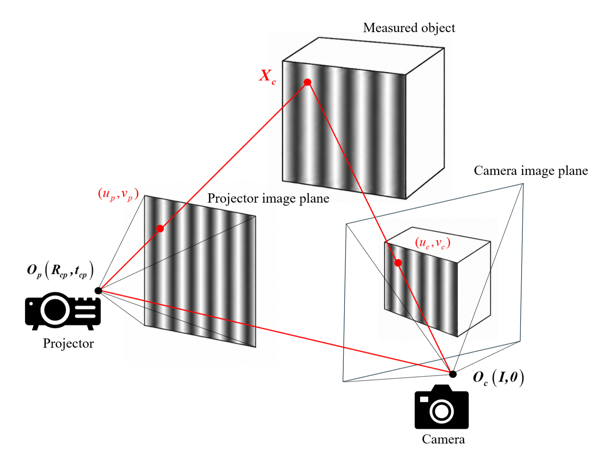
The measuring principle of SL system
Sinusoidal fringe patterns
Projector calibration using a chessboard is more difficult than camera calibration because the projector cannot directly capture the calibration features. Its pixel coordinates must be calculated by decoding the phase of the projected fringes at the chessboard corners. As shown in the figure below, the numbers in the boxes represent grayscale values, and the green bordered box indicates the detected corner pixel. Since a chessboard corner lies between black and white cells, it contains mixed reflectance and has an intermediate grayscale value under illumination. This reduces the amplitude and SNR of the captured fringes on camera, causing errors in phase decoding and the calculated projector pixel coordinates.
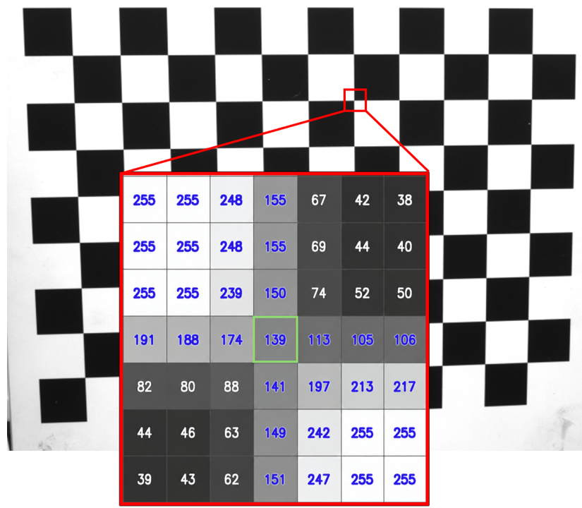
Grayscale values around a detected chessboard corner under constant ambient light
Measuring metal surfaces is difficult because the captured fringe amplitude is affected by projector lens vignetting and surface orientation. Lens vignetting reduces the projected amplitude from the optical axis toward the edge of the projection field, while the angles between the surface normal, the projector, and the camera further change the captured fringe intensity in camera's view. This results in variations in reflectance across the measured surface. These variations are particularly large on metal surfaces. As shown in the figure below, uniform projected fringes cause overexposure in regions with higher reflectance and underexposure in regions with lower reflectance. Both conditions reduce the captured fringe amplitude and SNR, resulting in phase decoding errors and inaccurate 3D point clouds.
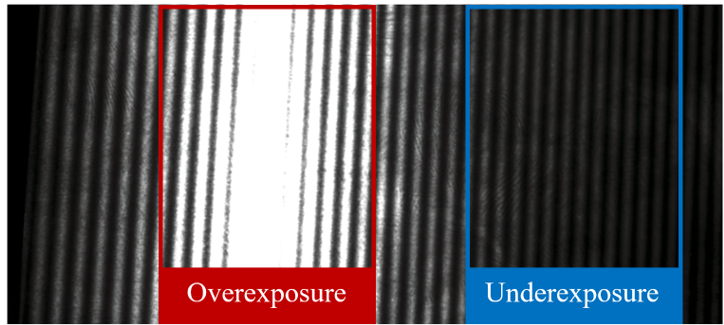
Captured fringe patterns on a metal surface under a uniform projected fringe amplitude
To improve projector calibration, new calibration feature points are generated inside the white chessboard cells, where the surface reflectance is higher. A local homography is established for each white cell using its 4 detected corners and known physical coordinates. The original corners are then moved toward the cell center along the diagonal directions, and the corresponding positions in the camera image are determined using the local homography. This preserves the known geometry of the calibration features while placing them in regions with higher reflectance. The captured fringes therefore have higher amplitude and SNR, allowing more accurate phase decoding and projector pixel coordinate calculation.
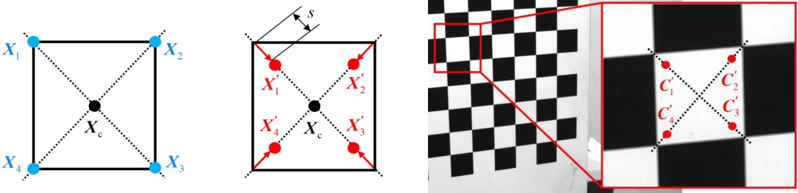
Generation of the new feature points. From left to right: physical generic coordinates of the corners, physical generic coordinates of the new feature points, and pixel coordinates of the new feature points in the camera image.
To improve the captured fringe quality on metal surface, the relationship between projected intensity and captured intensity is first calibrated for each corresponding projector and camera pixel pair. Uniform and constant patterns with gradually increasing intensities are projected onto the surface to determine how each camera pixel responds to illumination. Regions with high reflectance quickly reach saturation, while regions with low reflectance remain dark even at high projector intensity.
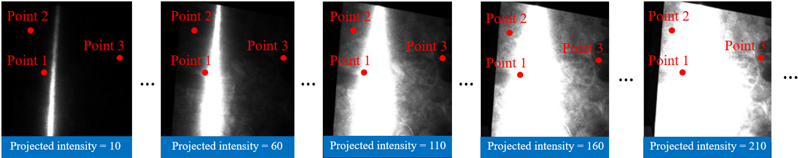
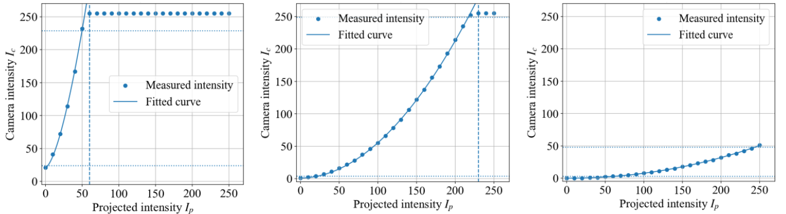
Pixel intensity calibration process. The top row shows the metal surface under gradually increasing projected intensities, and the bottom row shows the intensity response curves of Point 1, Point 2, and Point 3 with high, medium, and low reflectance respectively
After the relationship between the projected and captured intensities is calibrated for each camera–projector pixel pair, the projector intensity is adjusted pixel-wise to generate adaptive fringe patterns. These patterns project higher intensity onto underexposed regions and lower intensity onto overexposed regions. As a result, sufficient fringe amplitude and SNR can be maintained across the measured surface.
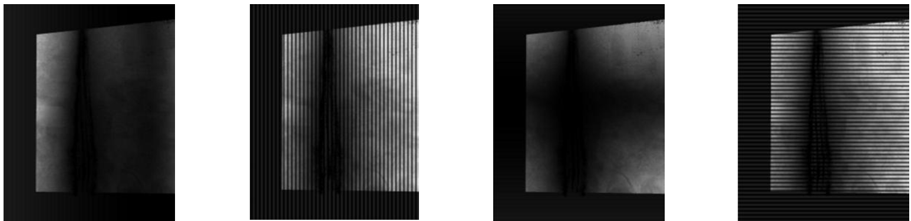
Generated adaptive fringe patterns. From left to right: low frequency vertical pattern, high frequency vertical pattern, low frequency horizontal pattern, and high frequency horizontal pattern.
If projector intensity adjustment alone cannot provide sufficient fringe amplitude, additional camera exposure times are adaptively calculated for the remaining overexposed and underexposed regions. The results obtained at different exposure times are then combined to improve fringe quality across the measured surface. The adaptive adjustment of both projector intensity and camera exposure time forms a dual-adaptive method.
Projector calibration experiments were conducted under different relative poses between the camera and projector
and with different phase shifting steps. The proposed feature points consistently produced lower reprojection errors than
chessboard corners. The average reprojection error decreased from 2.478 px to 0.107 px, with an average reduction
of 95.68%. As shown in the figure below, the upper row compares the projector pixel coordinates calculated using chessboard corners and the proposed feature points. Some coordinates obtained from the corners clearly deviate from their expected positions, while the proposed feature points remain correctly distributed. The lower row compares the captured intensity variations at the selected points. The proposed feature point produces a much larger fringe amplitude because it is located in a region with higher reflectance. This improves phase decoding and provides more accurate projector pixel coordinates.
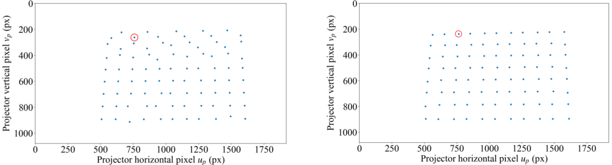
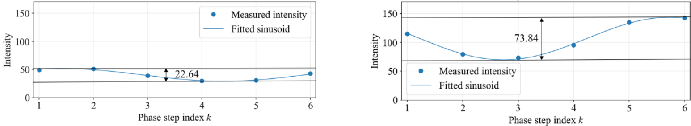
Comparison of the projector calibration results using corners (left column) and the proposed feature points (right column)
The proposed dual-adaptive method was tested in three emulated machining scenarios involving surface to surface distance and angle measurements. Conventional fringe patterns were first used to establish the initial correspondence between camera and projector pixels. Adaptive fringe patterns were then generated based on the calibrated intensity response of each pixel pair. Additional exposure times were adaptively calculated for regions that remained overexposed or underexposed, and the results obtained under different exposure settings were combined for 3D reconstruction. The adaptive method significantly mitigated overexposure and underexposure and produced much cleaner point clouds. The average measurement errors were 0.036 mm for surface to surface distances and 0.044 deg for angles, with an accuracy improvement of approximately 47%~61% than a commercial Mech-Mind structured light camera.
The figures below compare the conventional and the proposed adaptive fringe patterns, along with the raw point clouds obtained using them.
The conventional patterns cause severe overexposure and underexposure, resulting in noisy and incomplete point clouds.
The proposed adaptive patterns mitigate these problems and produce much cleaner raw point clouds that require only
simple noise filtering for distance and angle measurements.
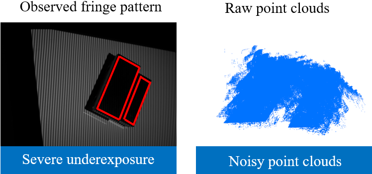
Conventional fringe patterns and raw point clouds of Scenario 1
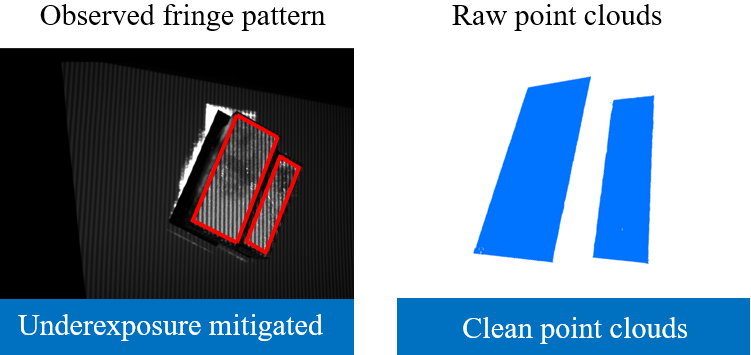
Adaptive fringe patterns and raw point clouds of Scenario 1
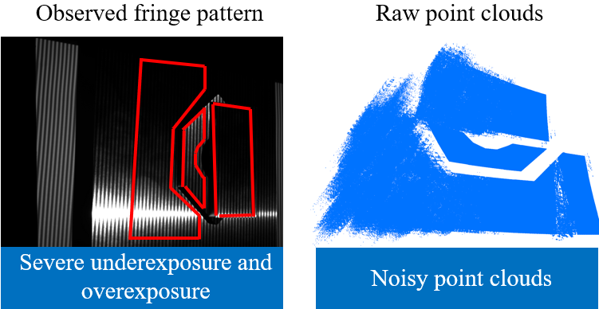
Conventional fringe patterns and raw point clouds of Scenario 2
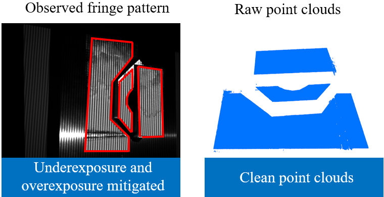
Adaptive fringe patterns and raw point clouds of Scenario 2
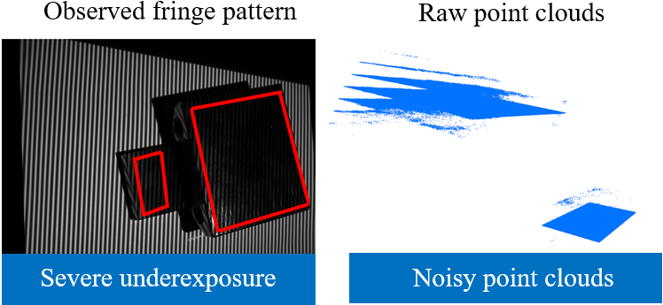
Conventional fringe patterns and raw point clouds of Scenario 3
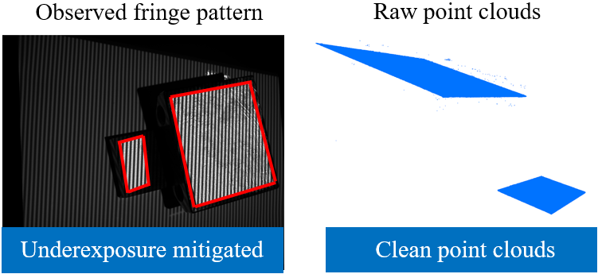
Adaptive fringe patterns and raw point clouds of Scenario 3
The videos below compare the conventional fringe patterns with the dual-adaptive fringe patterns in one of the cases from Scenario 2.
Conventional fringe patterns under exposure time of 50 ms
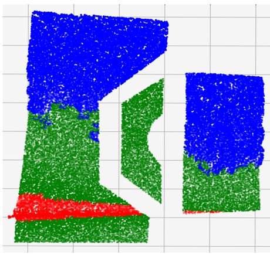
Pixel classification based on intensity span: green for no adjustment, blue for longer exposure, and red for shorter exposure
Adaptive fringe patterns under exposure time of 50 ms
Adaptive fringe patterns under exposure time of 128.82 ms
Adaptive fringe patterns under exposure time of 6.34 ms
Final fused dual-adaptive fringe patterns